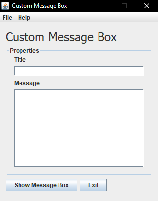

Custom Message Box
Written in Java, this program allows you to customise the message and title of a JOptionPane message box. It was written purely for fun and to try and see if Java can manage showing a message box with the full Bee Movie script as the message. It can't. (StackOverflowException if I remember correctly) I know I could of written about 25 lines of code and done the same thing to find if Java supports the Bee Movie script but I wanted to create it creatively and have an excuse to use the NetBeans GUI editor.
